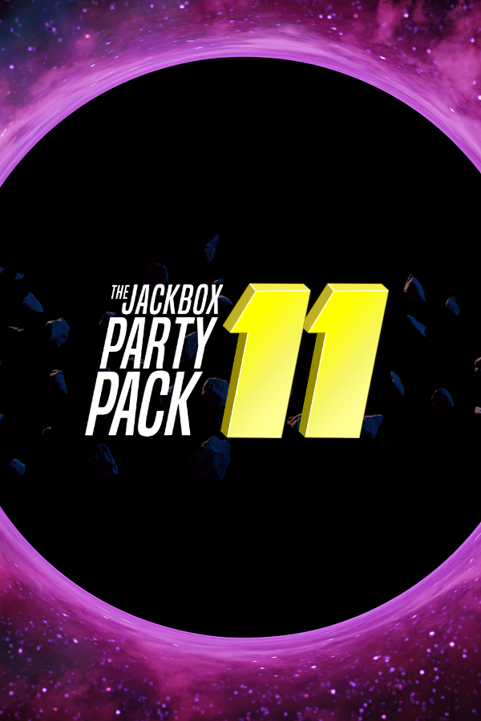

The Jackbox Party Pack 11
Every archived year-end list appearance, including placement and points earned.
About the Game
The Party Pack Is Back!The Jackbox Party Pack 11 catapults you and your crew into the best timeline of party game pandemonium. Whether you’re a trivia titan, a joke mastermind, or the resident undercover detective of your friend group, there’s something for everyone in this pack. No extra controllers needed - players simply join the game and play using phones, tablets or computers! Five brand-new games will change the way you party this fall and holiday season:Doominate (Writing)Take a perfectly lovely situation and destroy it in this head-to-head joke game where it feels so good to be so bad. Doominate supports 3-8 players.Hear Say (Sound Effects) Record sound effects and dialogue directly from your phone in a foley-inspired game where laughter is the soundtrack. Then, watch your voices come to life in a series of short movie clips! Hear Say supports 2-8 players. Cookie Haus (Drawing)Play our coziest and kookiest drawing game yet by fulfilling cookie design orders for unusual clientele. Don’t play on an empty stomach! Cookie Haus supports 3-8 players.Suspectives (Social Deduction) There’s been a crime, one player secretly did it, and the evidence comes from your own survey answers! Study the clues, defend your innocence (even if you’re lying), and put your friends on trial. Suspectives supports 4-8 players.Legends of Trivia (Trivia)Assemble your team and put your trivia knowledge to the test in a fantastical world full of danger! Teamwork! Monsters! Do you dare take on one of the most challenging trivia games yet? Legends of Trivia supports 1-6 players.Whether you’re gathering with old friends, big family, or interdimensional travelers, The Jackbox Party Pack 11 is here to bring back the ultimate house party. In this universe, fun is inevitable.
| Released | 2025-10-22 |
|---|---|
| Developer | Jackbox Games |
| Publisher | Jackbox Games |
| Genres | Adventure, RPG, Strategy, Simulation, Casual, Indie |
| Platforms | Linux, macOS, PC |
Steam AchievementsMultiplayerFull controller supportSteam CloudCo-opcooperative2DOnline Co-OpFantasyFunnyComedySplit Screen
Where to Buy
Game information provided by RAWG.
Points by Year
List History
| Year | Source | List | Placement | Points |
|---|---|---|---|---|
| 2025 | GQ | The 20 Best Video Games of 2025 | 13 | 3 |